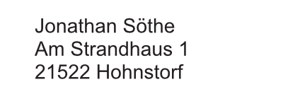

Angaben gemäß § 5 TMG:

Kontakt:
E-Mail: rezeptor.info@gmail.com
Stand: November 2026
Die App "Rezeptor" ist nach dem Prinzip der Datensparsamkeit ("Privacy by Design") konzipiert. Sämtliche von Ihnen eingegebenen Vorräte, Rezepte und Finanzdaten (WG-Kostenaufteilung) werden ausschließlich lokal in einer Datenbank auf Ihrem Endgerät gespeichert. Es findet keine Synchronisation mit unseren Servern statt und es werden keine Benutzerkonten angelegt.
Wenn Sie die Funktion zum Scannen von Kassenbons nutzen, greift die App auf die Kamera Ihres Geräts zu. Die Bildverarbeitung und die erste Texterkennung (OCR via Google ML Kit) erfolgen vollständig lokal auf Ihrem Gerät. Es werden keine Fotos oder Bilddateien ins Internet übertragen oder gespeichert.
Um die unstrukturierten Textdaten eines Kassenbons in verwertbare Artikel (Kategorien wie "Eier" oder "Olivenöl") und Preise zu übersetzen, bietet die App eine KI-gestützte Bereinigung an. Diese Funktion erfordert eine Internetverbindung.
Da wir keine personenbezogenen Daten auf eigenen Servern speichern, können wir Ihnen keine Auskünfte über gespeicherte Daten erteilen oder Löschungen vornehmen, da diese ausschließlich auf Ihrem eigenen Gerät liegen. Sie können alle Daten jederzeit selbst löschen, indem Sie die App deinstallieren oder die App-Daten in den Android-Einstellungen löschen.